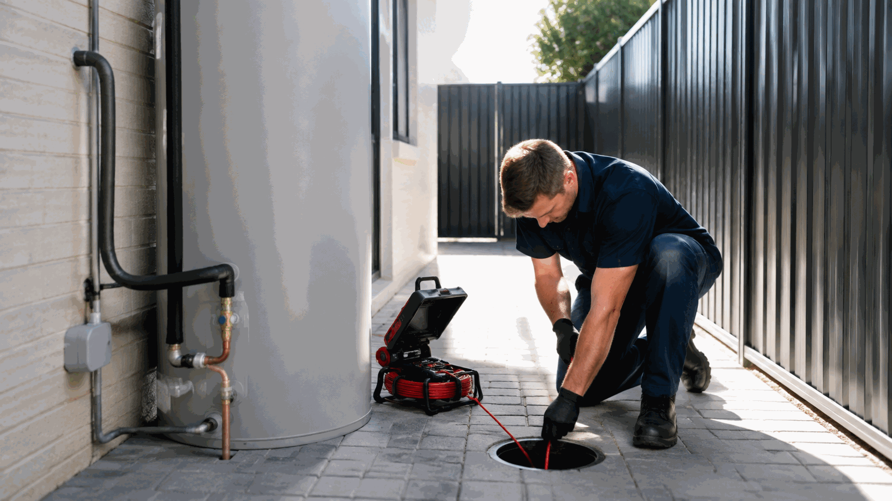

Hot-water repair
AUD $198–$660
per repair · incl. GST
No hot water, an unreliable shower temperature or a leaking hot-water unit? Ellis Services Group provides hot-water repairs and replacement assessments across Perth. Our local plumbing and electrical team investigates the fault, explains the practical repair options and provides a written quote before the agreed work proceeds.
Call 0413 477 667 Book hot-water repairA complete loss of hot water and a system that heats but cannot keep up are different service requests. We establish which outlets are affected, whether the change is constant or intermittent, and the type of equipment serving the property. This helps focus the assessment on the unit and supply rather than replacing parts on the basis of one symptom.
We assess inconsistent temperature, reduced hot-water flow and visible leaks around accessible connections. A problem at one shower can have a different scope from a problem affecting every hot tap. The repair plan distinguishes the hot-water equipment from local fixtures, pipework and connections so you can see what work is actually needed.
Where a hot-water fault involves electrical components as well as water connections, we coordinate the relevant licensed trades within the agreed job. Tell us the system location and any readable model information; you do not need to identify the failed component. See our hot-water plumbing and electrical fault guide for the distinction.

Our visit starts with the reported loss of service, the equipment location and safe access to the installation. We inspect the relevant connections and investigate the reported fault. Before repair work, we explain the findings, the proposed parts or connection work, and any access or additional trade requirements that affect the scope.
Repair is assessed against the condition of the existing installation, the identified fault and compatible parts. Replacement is a separate option when the equipment condition or required work makes a repair unsuitable. We discuss the property requirements and proposed replacement connections before quoting; a larger system or different equipment is not assumed to fit the existing installation.
For an approved repair or replacement, the agreed scope includes the relevant connection work and checks for that work. We explain what has been completed and any remaining issues identified during the visit. If the visible leak appears to come from another pipe or fixture, our water leak detection service is the appropriate related starting point.
Our Perth plumbing and electrical work is carried out by appropriately licensed trades. Licence details are available on request.
Safety: Do not remove covers, touch wiring or approach water near electrical equipment. Keep clear of a hazardous unit. For immediate danger, Call 000.
Ellis Price Guide
A practical guide for standard hot-water repair and replacement work at a Perth property.
AUD $198–$660
per repair · incl. GST
AUD $1,980–$4,950
per package · incl. GST
Guide conditions: These AUD ranges are for standard-hours, standard-scope work and are incl. GST. Access, materials, extra pipe, cable or circuit work, compliance work, emergency or after-hours work and unforeseen repairs are confirmed in a written quote before work proceeds.
The system type, symptoms, affected fixtures and access help define whether the work concerns the water connections, temperature or supply, or an electrical component. Repairs and replacement are separate scopes. Equipment, connection changes and any additional trade work are identified in the written quote for the property.
The final written quote sets out the work included, materials and any agreed additional tasks. We explain changes to the scope before extra work proceeds. Request a hot-water repair quote.
Loss of hot water at one outlet may need a different assessment from a whole-property failure. Plumbing connections, an electrical supply problem and equipment faults are distinct possibilities. Describe the system type if safely known. Gas, heat-pump, refrigerant or manufacturer-specific work requires the relevant scope and capability to be confirmed; a hot-water enquiry is not approval for every system type.
You can ask about a proposed product, but do not assume it suits the existing supply, connections or installation location. Confirm equipment compatibility, required trades and the full installation scope before purchase or approval.
No. Give the system type and proposed task. Any gas, refrigeration or other specialist component must be checked against the appropriate service capability and authorisation before work is accepted.
No. Describe the observable change and property context. We inspect the affected area on site to establish the cause and confirm the repair scope. If more access is needed, we agree it with you first.
Photos are optional: email safely taken photos to maxinemaintenance.au@outlook.com. You can contact us without photos. Do not approach a hazard, remove covers or dismantle equipment to take a photo.
It can be either, depending on the system and symptom. Describe the issue rather than trying to diagnose it yourself.
Include the property address, unit location, what changed, affected fixtures and any safely readable unit information.
No. Do not remove covers or handle wiring.
We assess the existing system and explain the repair scope. If replacement needs to be considered, we discuss equipment and connection requirements as a separate option in the written quote. No replacement is assumed from the initial enquiry.
Include the suburb, unit location, change in supply and whether one or all outlets are affected. For rentals, add the property manager, access contact and work-order reference. We serve Thornlie within our Southern Suburbs coverage as well as the other Perth regions. Our local team covers all six Perth service regions from our office at 140 St Georges Terrace, Perth WA 6000.
Call to discuss the work or send the property details through our enquiry form. You do not need to diagnose the fault or complete a technical inspection before contacting us.
Call 0413 477 667 Request a visit & written quote